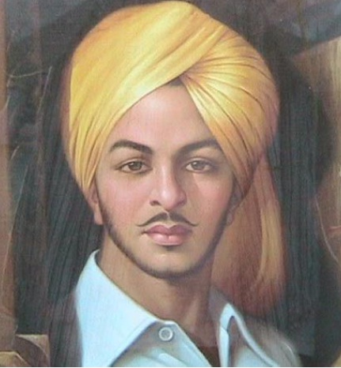

BHAGAT SINGH
Bhagat Singh, born September 27, 1907, Lyallpur, western Punjab, India [now in Pakistan]—died March 23, 1931, Lahore [now in Pakistan], revolutionary hero of the Indian independence movement.Singh was found guilty of killing a British police officer and hanged on March 23, 1931.
MORE